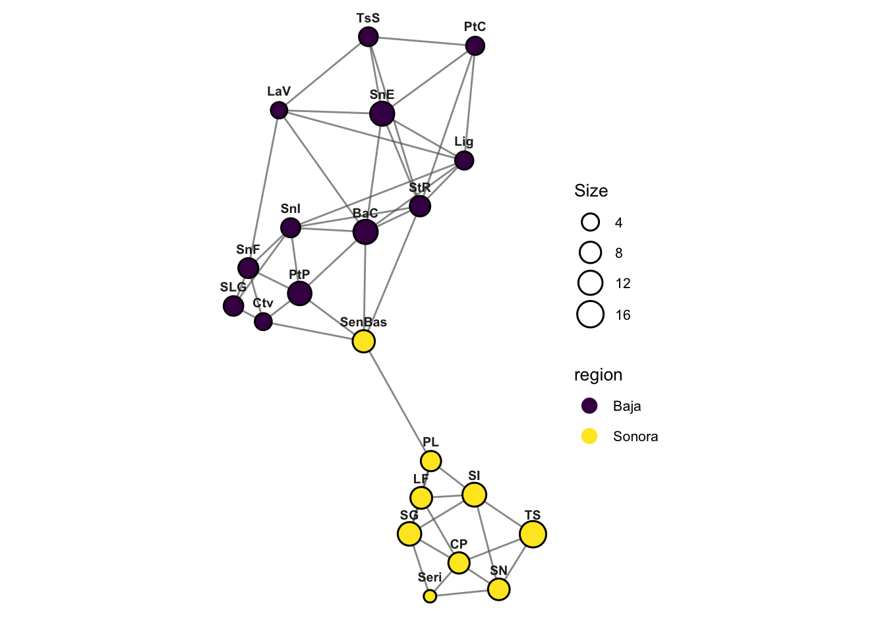

library( gstudio )
library( dplyr )
library( igraph )
library( ggplot2 )
data( arapat )8 Population Graphs
Population Graphs are a graph-theoretic approach to understanding among-population genetic connectivity (Dyer & Nason 2004). Rather than assuming a specific model of gene flow (e.g., island or stepping-stone), population graphs estimate the conditional genetic covariance structure among populations, retaining only statistically significant edges.
8.1 Constructing a Population Graph
8.1.1 From a Data Frame
The easiest way to create a population graph is with population_graph(), which handles the conversion from genotypes to multivariate data internally:
graph <- arapat |>
population_graph( stratum = "Species" )Warning in popgraph(data, groups, ...): 1 variables are collinear and being
dropped from the discriminant rotation.graphIGRAPH bf1c76c UNW- 3 3 --
+ attr: name (v/c), size (v/n), weight (e/n)
+ edges from bf1c76c (vertex names):
[1] Cape --Mainland Cape --Peninsula Mainland--Peninsula8.1.2 From a Multivariate Matrix
For more control, convert genotypes to multivariate format first, then call popgraph() directly:
mv <- arapat |>
to_mv()
groups <- arapat |>
pull( Species ) |>
factor()
graph <- mv |>
popgraph( groups )Warning in popgraph(mv, groups): 1 variables are collinear and being dropped
from the discriminant rotation.graphIGRAPH 01097e2 UNW- 3 3 --
+ attr: name (v/c), size (v/n), weight (e/n)
+ edges from 01097e2 (vertex names):
[1] Cape --Mainland Cape --Peninsula Mainland--PeninsulaThe alpha parameter controls edge retention significance (default 0.05):
graph_strict <- mv |>
popgraph( groups, alpha = 0.01 )Warning in popgraph(mv, groups, alpha = 0.01): 1 variables are collinear and
being dropped from the discriminant rotation.graph_strictIGRAPH 7d08bbd UNW- 3 3 --
+ attr: name (v/c), size (v/n), weight (e/n)
+ edges from 7d08bbd (vertex names):
[1] Cape --Mainland Cape --Peninsula Mainland--Peninsula8.1.3 From an Adjacency Matrix
Use as.popgraph() to convert a pre-computed adjacency matrix:
A <- matrix( c( 0, 1, 0, 1,
1, 0, 1, 0,
0, 1, 0, 1,
1, 0, 1, 0 ), nrow = 4 )
rownames( A ) <- colnames( A ) <- LETTERS[1:4]
g <- A |>
as.popgraph()
gIGRAPH e567827 UNW- 4 4 --
+ attr: name (v/c), weight (e/n)
+ edges from e567827 (vertex names):
[1] A--B A--D B--C C--D8.2 Bundled Population Graphs
The package includes one pre-computed population graph, Lophocereus from Dyer & Nason (2004):
data( lopho )
lophoIGRAPH d62a582 UNW- 21 50 --
+ attr: name (v/c), size (v/n), region (v/c), weight (e/n)
+ edges from d62a582 (vertex names):
[1] BaC --LaV BaC --Lig BaC --PtP BaC --SenBas BaC --SnE
[6] BaC --SnI BaC --StR CP --LF CP --Seri CP --SG
[11] CP --SN CP --TS Ctv --PtP Ctv --SenBas Ctv --SLG
[16] Ctv --SnF LaV --Lig LaV --SnE LaV --SnF LaV --TsS
[21] LF --PL LF --SG LF --SI Lig --PtC Lig --SnE
[26] Lig --SnI Lig --StR PL --SenBas PL --SG PL --SI
[31] PtC --SnE PtC --StR PtC --TsS PtP --SenBas PtP --SnF
[36] PtP --SnI StR --SenBas Seri--SG Seri--SN SG --SI
+ ... omitted several edges8.3 Decorating a Graph
The decorate_graph() function merges external data into graph vertex attributes. This is essential for spatial visualization:
data( baja )
baja |>
head() Region Population Latitude Longitude
1 Baja BaC 26.59 -111.79
2 Baja Ctv 29.73 -114.72
3 Baja LaV 24.04 -109.99
4 Baja Lig 25.73 -111.27
5 Baja PtC 24.19 -111.15
6 Baja PtP 29.03 -113.90lopho_dec <- lopho |>
decorate_graph( baja, stratum = "Population" )
lopho_dec |>
vertex_attr_names()[1] "name" "size" "region" "Region" "Latitude" "Longitude"Now the graph nodes carry coordinate and metadata attributes.
8.4 Graph Metrics
8.4.1 Node Properties
# Vertex names
V( lopho )$name [1] "BaC" "Ctv" "LaV" "Lig" "PtC" "PtP" "SLG" "SnE"
[9] "SnF" "SnI" "StR" "TsS" "CP" "LF" "PL" "SenBas"
[17] "Seri" "SG" "SI" "SN" "TS" # Degree (number of edges)
lopho |>
degree() BaC Ctv LaV Lig PtC PtP SLG SnE SnF SnI StR
7 4 5 6 4 5 3 6 5 6 7
TsS CP LF PL SenBas Seri SG SI SN TS
4 5 4 4 5 3 5 5 4 3 # Betweenness centrality
lopho |>
betweenness() BaC Ctv LaV Lig PtC PtP SLG SnE SnF SnI StR
33 21 4 0 0 15 4 0 7 12 27
TsS CP LF PL SenBas Seri SG SI SN TS
1 2 15 91 96 1 16 30 0 0 8.4.2 Centroid Distance
The multivariate centroid distance between population centroids in discriminant space:
cd <- mv |>
centroid_distance( groups )
cd [,1] [,2] [,3] [,4] [,5] [,6]
Cape 0.0800000 0.9200000 0.1333333 0.8533333 0.00000000 0.00000000
Mainland 0.2638889 0.7361111 0.8194444 0.0000000 0.01388889 0.00000000
Peninsula 0.6924603 0.3075397 0.3432540 0.0000000 0.59920635 0.03769841
[,7] [,8] [,9] [,10] [,11] [,12]
Cape 0.000000000 0.3000000 0.70000000 0.00000000 0.000000000 0.000000000
Mainland 0.000000000 0.2222222 0.00000000 0.63888889 0.111111111 0.000000000
Peninsula 0.003968254 0.9007937 0.04960317 0.02380952 0.009920635 0.007936508
[,13] [,14] [,15] [,16] [,17] [,18]
Cape 0.9666667 0.03333333 0.00000000 0.9333333 0.000000000 0.000000000
Mainland 0.7916667 0.15277778 0.02777778 0.5277778 0.000000000 0.000000000
Peninsula 0.5714286 0.42857143 0.27976190 0.6726190 0.001984127 0.001984127
[,19] [,20] [,21] [,22] [,23] [,24]
Cape 0.08666667 0.5733333 0.286666667 0.00000000 0.0000000 0.00000000
Mainland 0.00000000 0.0000000 0.000000000 0.00000000 0.0000000 0.05555556
Peninsula 0.00000000 0.0000000 0.009920635 0.09722222 0.3174603 0.33730159
[,25] [,26] [,27] [,28] [,29] [,30]
Cape 0.0000000 0.00000000 0.000000000 0.0000000 0.000000000 0.01333333
Mainland 0.0000000 0.01388889 0.361111111 0.1527778 0.000000000 0.00000000
Peninsula 0.1964286 0.01785714 0.001984127 0.0000000 0.001984127 0.00000000
[,31] [,32] [,33] [,34] [,35] [,36] [,37]
Cape 0.013333333 0.94000000 0.00000000 0.000 0.02 0.00000000 0.00000000
Mainland 0.861111111 0.01388889 0.05555556 0.000 0.00 0.00000000 0.00000000
Peninsula 0.003968254 0.00000000 0.00000000 0.625 0.00 0.03968254 0.03571429
[,38] [,39] [,40] [,41] [,42] [,43]
Cape 0.01333333 0.000000000 0.00000000 0.00000000 0.00000000 0.00000000
Mainland 0.06944444 0.000000000 0.01388889 0.08333333 0.08333333 0.00000000
Peninsula 0.28968254 0.005952381 0.00000000 0.00000000 0.00000000 0.01190476
[,44] [,45] [,46] [,47] [,48] [,49]
Cape 0.00000000 0.0000000 0.0000000 0.00000000 0.00000000 0.00000000
Mainland 0.01388889 0.0000000 0.0000000 0.00000000 0.02777778 0.04166667
Peninsula 0.38293651 0.1150794 0.3730159 0.03571429 0.00000000 0.01785714
[,50] [,51] [,52] [,53] [,54] [,55]
Cape 0.00000000 0.0000000 0.0000000 0.00000000 0.000000000 0.006666667
Mainland 0.09722222 0.2916667 0.2222222 0.04166667 0.000000000 0.000000000
Peninsula 0.05357143 0.0000000 0.0000000 0.00000000 0.001984127 0.000000000
[,56] [,57] [,58]
Cape 0.18 0.7733333 0.04
Mainland 0.00 0.0000000 0.00
Peninsula 0.00 0.0000000 0.008.4.3 Centroid Variance
Multivariate variance around each population centroid:
cv <- mv |>
centroid_variance( groups )
cv Stratum variance
1 Cape 1.519820
2 Mainland 2.169841
3 Peninsula 2.8868428.4.4 Shannon Entropy
Shannon entropy quantifies the uncertainty in a probability distribution:
# Entropy of the degree distribution
deg <- lopho |>
degree()
( deg / sum( deg ) ) |>
shannon_entropy()[1] 4.3502128.4.5 Edge Contortion
A measure of how edges deviate from geographic expectations. It needs a graph decorated with coordinates and a physical distance matrix among its nodes, in node order:
nodes <- igraph::V( lopho_dec )$name
P <- baja |>
strata_distance( stratum = "Population" )
contorted <- lopho_dec |>
edge_contortion( P = P[nodes, nodes] )
igraph::E( contorted )$stretch |>
table()
Compressed Extended
26 24 8.5 Congruence Testing
8.5.1 Topology Congruence
Compare the topology of two population graphs. Here we ask whether two independent sets of markers give the beetles the same graph, building one graph from the first four loci and one from the last four:
graph_a <- arapat |>
select( Population, LTRS, WNT, EN, EF ) |>
population_graph()
graph_b <- arapat |>
select( Population, ZMP, AML, ATPS, MP20 ) |>
population_graph()
graph_a |>
congruence_topology( graph_b )IGRAPH f945bdd UN-- 39 28 --
+ attr: name (v/c), size.1 (v/n), size.2 (v/n)
+ edges from f945bdd (vertex names):
[1] 101--102 101--32 102--32 12 --161 153--58 156--157
[7] 157--ESan 159--171 159--89 160--SFr 161--162 161--93
[13] 163--ESan 164--Const 165--168 168--51 168--64 171--173
[19] 173--89 175--177 73 --75 84 --88 88 --9 93 --SFr
[25] 98 --Aqu 98 --Mat Aqu--ESan Aqu--Mat 8.5.2 Statistical Testing
Use test_congruence() to test whether two graphs are more similar in topology than expected by chance:
graph_a |>
test_congruence( graph_b )
Pearson's product-moment correlation
data: d1 and d2
t = 18.665, df = 388, p-value < 2.2e-16
alternative hypothesis: true correlation is not equal to 0
95 percent confidence interval:
0.6316601 0.7367963
sample estimates:
cor
0.6878187 8.5.3 Edge Stability
The permute_popgraph() function bootstraps individuals within each stratum, rebuilds the graph nboot times (default 999) and returns a graph whose edge weights are the fraction of bootstrap graphs containing each edge:
boot_graph <- mv |>
permute_popgraph( groups, nboot = 999 )8.6 Subgraph Operations
The - operator computes the difference between two popgraphs (removes edges in common). You can also extract subgraphs using igraph functions:
smaller <- lopho |>
delete_vertices( "SenBas" )
V( smaller )$name [1] "BaC" "Ctv" "LaV" "Lig" "PtC" "PtP" "SLG" "SnE" "SnF" "SnI"
[11] "StR" "TsS" "CP" "LF" "PL" "Seri" "SG" "SI" "SN" "TS" 8.7 Export Formats
8.7.1 To Adjacency Matrix
M <- lopho |>
to_matrix()
M[1:5, 1:5] BaC Ctv LaV Lig PtC
BaC 0 0 1 1 0
Ctv 0 0 0 0 0
LaV 1 0 0 1 0
Lig 1 0 1 0 1
PtC 0 0 0 1 08.7.2 To Data Frame
lopho |>
to_df() |>
head() Stratum size region
1 BaC 12.158810 Baja
2 Ctv 3.880886 Baja
3 LaV 3.533757 Baja
4 Lig 4.731355 Baja
5 PtC 4.684652 Baja
6 PtP 10.925375 Baja8.7.3 To JSON
lopho |>
to_json() |>
cat()8.7.4 To Spatial Formats
# As sf object
sf_obj <- lopho_dec |>
to_sf()
# As KML
lopho_dec |>
to_kml( file = "lopho.kml" )8.7.5 To pgraph Format
The .pgraph format is a simple text representation:
lopho_dec |>
write_popgraph( file = "lopho.pgraph" )8.7.6 Reading a Population Graph
g <- system.file( "extdata", "lopho.pgraph", package = "gstudio" ) |>
read_popgraph()
gIGRAPH 7c2168e UNW- 21 50 --
+ attr: name (v/c), size (v/n), color (v/c), weight (e/n)
+ edges from 7c2168e (vertex names):
[1] BaC --LaV BaC --Lig BaC --PtP BaC --SnE BaC --SnI
[6] BaC --StR BaC --SenBas Ctv --PtP Ctv --SLG Ctv --SnF
[11] Ctv --SenBas LaV --Lig LaV --SnE LaV --SnF LaV --TsS
[16] Lig --PtC Lig --SnE Lig --SnI Lig --StR PtC --SnE
[21] PtC --StR PtC --TsS PtP --SnF PtP --SnI PtP --SenBas
[26] SLG --SnF SLG --SnI SnE --StR SnE --TsS SnF --SnI
[31] SnI --StR StR --TsS StR --SenBas CP --LF CP --Seri
[36] CP --SG CP --SN CP --TS LF --PL LF --SG
+ ... omitted several edges8.8 Plotting
plot() draws a Population Graph with ggplot2 and returns a ggplot you can extend with +. Nodes are placed from Longitude/Latitude vertex attributes when present (for example after decorate_graph()), and otherwise with a Kamada-Kawai layout; pass layout = to choose another layout name, a layout function, or a coordinate table. The same layout, node_size, node_labels, node_fill, edges and edge_width options apply to plot() on a gravity field and to animate_popgraphs(). Directed graphs from asymmetric_popgraph() are drawn with arrows. For fully custom figures, use ggraph (see the Visualization article).
lopho |>
plot()
On a decorated graph, nodes are placed at their coordinates. For context, draw the graph over a map: base = takes any ggplot, here a grey outline of the land from Natural Earth (the rnaturalearth package), and the graph’s layers go on top. The Visualization chapter (Chapter 12) adds sea labels and a north arrow.
countries <- c( "Mexico", "United States of America" )
land <- rnaturalearth::ne_countries( country = countries,
scale = "medium",
returnclass = "sf" )
baja_map <- ggplot() +
geom_sf( data = land, fill = "grey92", colour = "grey55" ) +
coord_sf( xlim = c( -116, -108.5 ), ylim = c( 22.5, 32.5 ) )
lopho_dec |>
plot( base = baja_map )
8.9 Randomization
Generate a random graph with the same nodes and degree sequence as the original (the default, mode = "degree", uses degree-preserving edge swaps), or with the same number of edges placed at random (mode = "full"):
rg <- lopho |>
randomize_graph()
rgIGRAPH 9a17c16 UN-- 21 50 --
+ attr: name (v/c), size (v/n), region (v/c)
+ edges from 9a17c16 (vertex names):
[1] LaV --SLG StR --SenBas SenBas--Seri LaV --Lig Ctv --CP
[6] Ctv --Seri StR --SN SG --SI StR --CP PtC --StR
[11] TsS --CP PtP --SN SnF --SI PtC --PtP BaC --SI
[16] PtP --SnE LaV --Seri SnE --TS PtC --SLG TsS --SN
[21] SnI --TS SnI --LF PtP --SI BaC --PL LaV --LF
[26] LaV --StR SnE --SG Ctv --SnI Lig --SG BaC --SN
[31] TsS --TS PtC --SG CP --SenBas BaC --SenBas Lig --SnE
[36] SnE --StR Lig --SnF Ctv --SG BaC --SnI Lig --SnI
+ ... omitted several edgesTo read the direction of gene flow from a Population Graph, see Chapter 9.
8.10 Without Pipes
graph <- population_graph( arapat, stratum = "Species" )
graph <- popgraph( to_mv( arapat ),
factor( arapat$Species ),
alpha = 0.05 )
lopho_dec <- decorate_graph( lopho, baja, stratum = "Population" )
cd <- centroid_distance( to_mv( arapat ), factor( arapat$Species ) )
congruence_topology( graph_a, graph_b )
test_congruence( graph_a, graph_b )
M <- to_matrix( lopho )
path <- system.file( "extdata",
"lopho.pgraph",
package = "gstudio" )
g <- read_popgraph( path )
plot( lopho, layout = "kk" )